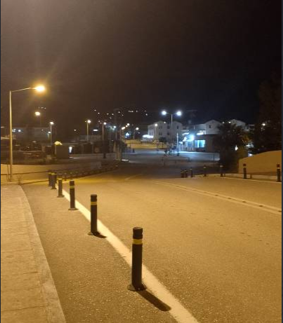
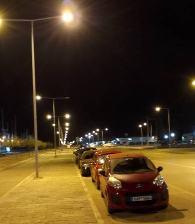

Μια Ρομαντική Χυδαιότητα
ΠΡΟΣΟΧΗ!!!
Τα ονόματα και η ιστορία είναι τυχαία.
Οποιαδήποτε ομοιότητα με πραγματικά πρόσωπα ή καταστάσεις αποτελεί σύμπτωση.
Τα κατάφερε, βγήκαμε! Ίσα που γνωριζόμασταν αλλά ήξερα πως με αυτήν δεν ήμασταν απλά δυο άγνωστοι,
ήξερα πως από αγάπη ή από ανάγκη – τελικά ίσως το δεύτερο – θα κάναμε παρέα για τα καλά.
Η Νύχτα:
Την πρώτη νύχτα δεν έγινε τίποτα περίεργο, απλά βγήκαμε.
Η συνάντηση έγινε τον Απρίλη στην εκκλησία (την ώρα 19:00). Μετά περπατήσαμε μέχρι την άκρη της πόλης και μετά πάλι πίσω.
Όταν βράδιασε, πήγαμε σε ένα λιμάνι και καθίσαμε μέχρι να φύγει· μετά έφυγα κι εγώ.
Το καλύτερο για εμένα ήταν η θέα της πόλης, ένας μεγάλος δρόμος με πορτοκαλί-κίτρινα, ψηλά φώτα και
οτι εκείνη τη μέρα έκανα πολλά καινούρια πράγματα.
Για εμένα αυτή η νύχτα δεν ήταν απλά μια βόλτα, ήταν η πρώτη νύχτα που πραγματικά έζησα στα 24 χρόνια μου.
Μου φαίνεται όμως πως βιάζομαι να γράψω για αυτή τη νύχτα· η αλήθεια είναι πως δεν μπορώ να περιγράψω με λόγια το πώς ένιωσα.
Κρατήστε μόνο το ότι από τότε ξεκίνησε μία νέα ζωή μου και άλλαξε ο τρόπος που έβλεπα τον κόσμο.
Αυτή η βραδιά ήταν η αρχή μιας δεύτερης ζωής μου –όπως είπα και πριν-.
Βέβαια τίποτα δεν είναι τέλειο, και ειδικά οι ανθρώπινες σχέσεις. Θα μπορούσα να τις συγκρίνω με κάποια εφεύρεση του ανθρώπου:
ξεκινάνε καλά βοηθώντας, αλλά καταλήγουν να κάνουν τα πράγματα χειρότερα.
«Η σχέση μεταξύ δύο ανθρώπων είναι δύσκολα συντηρήσιμη, και μια ασυντήρητη σχέση διαλύεται αργά και βασανιστικά, αν δεν την καταστρέψεις εξ αρχής.»
Κάπως έτσι συνέβη και με εμάς, αλλά με έναν ιδιαίτερο τρόπο.
Είναι, παρόλα αυτά, αστείο το ότι ο τίτλος περιέχει τη λέξη “Ιστορίες” αλλά περιέχει μόνο μία. Αναρωτιέμαι ποιος άσχετος με τη λογοτεχνία μουτζούρωσε αυτές τις σελίδες και το αποκάλεσε έκθεση…
Μην ανησυχείτε, οι ιστορίες θα συνεχίσουν.
Οι παρακάτω εικόνες είναι μερικές φωτογραφίες που τραβήχτηκαν από έναν ανώνυμο χρήστη και επιλέχθηκαν από τον συγγραφέα της ιστορίας.



Πρωί πρώτο:
Από τις διακοπές και μετά ήταν δύσκολο να βρισκόμαστε· κανονίσαμε λοιπόν να βρεθούμε στο νησί. Αυτή είχε δουλειά, όμως αυτό δεν την εμπόδισε από το να με καλέσει μέσα στο κτήριο που εργαζόταν, να της κάνω παρέα.
Όταν έφτασα το πρωί (περίπου στις 8:00) με περίμενε στην είσοδο. Εγώ είχα ήρεμες αλλά ρευστές προθέσεις.
Στην αρχή κάναμε παρέα, μιλούσαμε και ακόμα και το ότι ήμασταν μαζί ήταν πραγματικά τέλειο!
Κάποια στιγμή είπε: «Ψήσου να φιληθούμε!» Ήταν ακριβώς αυτό που ήθελα να ακούσω. «Ακριβώς αυτό θα σε ρώταγα και εγώ», της είπα.
Ανεβήκαμε στον πάνω όροφο, κάτσαμε σε μια άνετη θέση και κάποια στιγμή το έκανε! Ήταν μία από τις καλύτερες στιγμές μου με αυτήν!
Μετά από ένα μικρό διάλειμμα ανεβήκαμε στον πάνω όροφο, μπήκαμε στη μεσαία πόρτα, σε μία αίθουσα κιθάρας που έμενε μόνιμα ανοιχτή.
«Αυτή είναι η αίθουσα του κυρίου Χάρη», είπε. Κάτσαμε λίγο, εκεί μέσα ήταν ζεστά και άνετα. Ήταν μια μικρή αίθουσα, με ένα μικρό τετράγωνο παράθυρο απέναντι από την πόρτα, ένα πιάνο, μερικές κιθάρες και ένα τραπέζι με μία καρέκλα.
Ξαφνικά η κατάσταση άρχισε να γίνεται άβολη. Σιγά-σιγά ξεκίνησε να γδύνεται.
«Τι σκέφτεσαι τώρα;» είπε.
Δεν απάντησα, τη βοήθησα να βγάλει μέχρι και το τελευταίο κομμάτι υφάσματος από πάνω της. Μετά ξάπλωσε στο γραφείο του κυρίου Χάρη.
Το τι έγινε είναι, φαντάζομαι, αυτονόητο. Ντρέπομαι να γράψω πολλές λεπτομέρειες. Τέλος πάντων, μετά από αυτό φάγαμε λίγο και παίξαμε κιθάρα.
Τα πάντα ήταν τέλεια! Δεν φανταζόμουν ότι την επόμενη κιόλας μέρα τα πράγματα θα άλλαζαν…
Μετά, κατά τις 7:00 το απόγευμα, θυμηθήκαμε πως έπρεπε να φύγουμε, χαιρετηθήκαμε και πήγα στο ΚΤΕΛ.
Πρωί δεύτερο:
Έφτασα. Αυτή τη φορά συναντηθήκαμε στην είσοδο του κτηρίου. Είχε φέρει ένα μπουκάλι βότκα και άλλα πράγματα.
Καθίσαμε σε κάτι σκαλιά στην πίσω πόρτα· τρώγαμε, πίναμε, καπνίζαμε και μιλούσαμε. Ήταν τέλεια.
Μετά από τρεις ώρες αποφασίσαμε να πάμε πάλι στον πάνω όροφο. Από την αρχή είχα καταλάβει τι ήθελε, και ήθελα και εγώ το ίδιο. Βέβαια ποτέ δεν της το αποκάλυψα — θα εξηγήσω αμέσως.
Πήγαμε ξανά στη μεσαία πόρτα. Εκεί, με ένα γλυκό και παιχνιδιάρικο ύφος είπε: «Θα με φας; Θα το κάνεις;».
Της απάντησα: «Όχι τώρα». Πράγματι δεν είχα πολύ όρεξη.
Ενώ το να καταλάβει — και να σεβαστεί — αυτό που της είπα θα ήταν το πιο λογικό, αυτή συνέχισε να πιέζει. Δεν με χάλασε, γιατί αλλιώς δεν θα έγραφα αυτό το κείμενο.
«Όχι», έλεγα ξανά και ξανά.
Βέβαια, έχω να πω πως στα αλήθεια ήθελα και εγώ λίγο, αλλά ήθελα να δω τι θα κάνει…
Κάποια στιγμή αποφάσισα να το κάνω. Ήταν πίεση και επιθυμία μαζί, αλλά το μόνο σίγουρο είναι πως από τη μεριά της έκανε λάθος.
Δεν σχολίασα τίποτα επειδή δεν ήθελα να χαλάσω μια από τις καλύτερες μέρες της “καινούριας μου ζωής”.
Δεν είχα σκοπό να αναφερθώ σε αυτό το περιστατικό μέχρι το τέλος της ημέρας· περίμενα να μου μιλήσει αυτή πρώτη.
Όπως ξέρουμε, καλό είναι να δοκιμάζουμε τους ανθρώπους. Έτσι τη δοκίμασα και εγώ (και με τις δύο έννοιες).
Βράδυ:
Η ώρα είναι 23:39 (28 Ιουνίου του 2024), αλλά δεν έχει αναφερθεί σε αυτό το περιστατικό καθόλου.
Έστειλα το μήνυμα:
«Γεια σου, νομίζω πως σήμερα έγινε κάτι άσχημο και θέλω εξηγήσεις. Δεν άκουγες που σου έλεγα όχι;»
Εδώ θέλω να κάνετε μια παύση και να σκεφτείτε τι θα απαντούσε κάποια σε αυτό — δεν είστε έτοιμοι να ακούσετε την απάντησή της.
Μετά από ένα λεπτό απάντησε λέγοντας πως δεν κατάλαβε, ότι “είναι χαζή” και ότι δεν φταίει.
Όμως δεν μπορώ να πω, ήταν πολύ δίκαιη — και καλή.
Συνέχεια άλλαζε το θέμα και απαντούσε με ξερά «ΟΚ», πιθανότατα για να μη με κάνει να νιώσω ενοχές ή να μην με αναγκάσει να παραδεχτώ το λάθος μου.
Ήταν πραγματικά πολύ καλή, όσο η ασκαρίδα για τον άνθρωπο…
Ποια είναι:
Κάποια στιγμή η σχέση που είχαμε διακόπηκε, ίσως γιατί ήταν πολύ δίκαιη για να κάνει παρέα με εμένα.
Δεν με πείραξε, έχω να πω. Δεν χαλάστηκα καθόλου, γιατί ήξερα πως αυτή η ιστορία ήταν ένα μεγάλο αστείο.
Είχα καταλάβει από νωρίς πως αυτή η σχέση δεν θα κρατούσε για πολύ και γι’ αυτό την άφησα να καεί.
Αν έπρεπε να χαρακτηρίσω αυτή τη γυναίκα θα έλεγα πως είναι κακιά ή ανώριμη.
Βασικά δεν μπορώ να πώ τίποτα για αυτήν.
Και αυτό είναι που την κάνει ενδιαφέρον άτομο: δεν μπορείς να καταλάβεις με τίποτα τι σκέφτεται και ό,τι σχεδιάζει παραμένει επτασφράγιστο μυστικό!
Αν σου πει? Ακόμα και αν σου πει, θα χρειαστεί να αφιερώσεις χρόνια από τη ζωή σου ερευνώντας αν αυτό που είπε είναι πραγματικά αλήθεια.
Αν νομίζετε πως υπερβάλλω, αγαπητέ αναγνώστη, σας προκαλώ να τη γνωρίσετε. Είμαι σίγουρος πως μετά από έξι μήνες θα γράφετε και εσείς τα ίδια πράγματα.
Μετά από μερικές ώρες αυτή η προχειράτζα έφτασε στο τέλος της, καθώς ξέμεινα από έμπνευση και χρόνο.
Αυτό ήταν οι σκέψεις μου για αυτές τις ώρες.